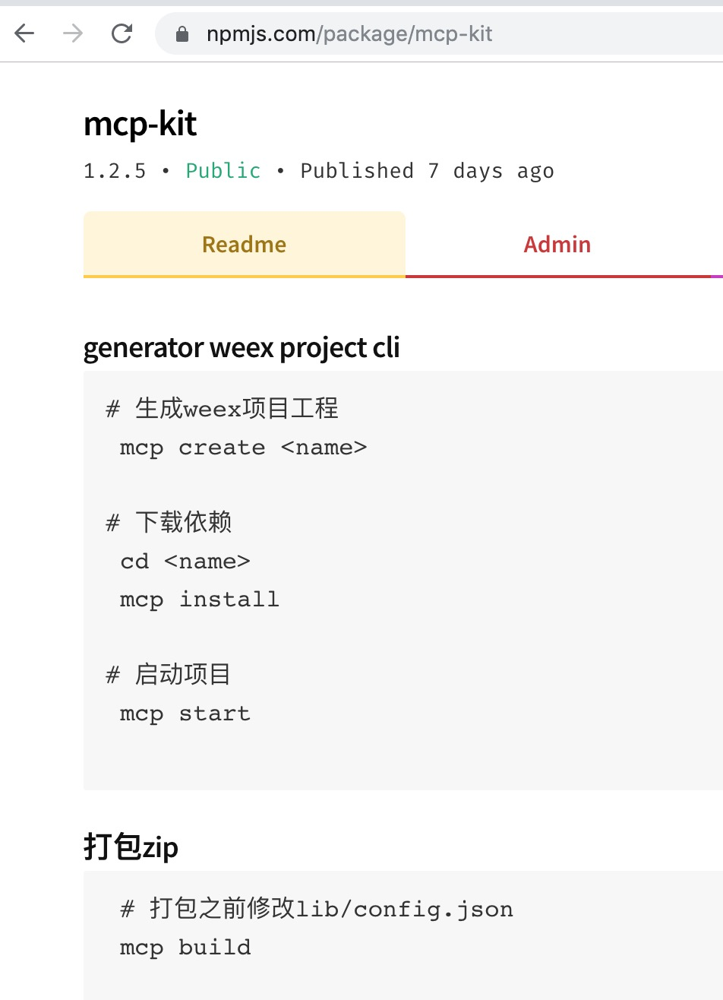
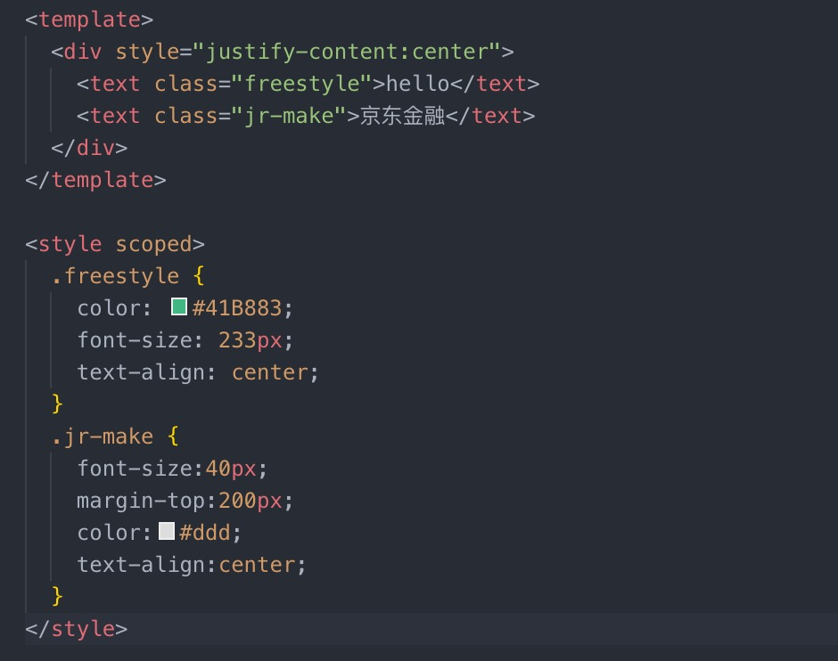
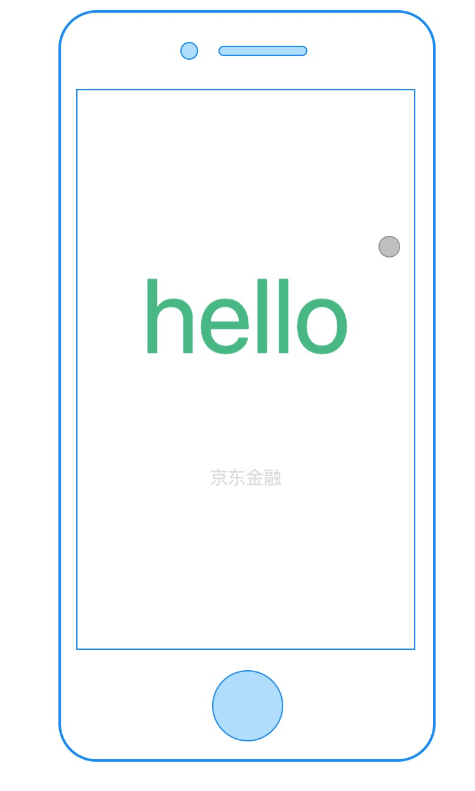

weex
Created by zhoujun
什么是weex ?
- 一个跨平台的解决方案
- 使用流行的web开发体验来开发高性能原生应用的框架
- 通过web开发语言来构建Android，ios，web应用
- 一套代码多端运行
ps: 我们只需要在自己的APP中嵌入Weex的SDK，就可以用HTML/CSS/JavaScript来开发Native级别的UI界面。
ps: 解决了频繁发版和多端研发两大痛点
谁在使用
weex中的前端框架

Vue.js 是一个不断进化中的前端框架
Rax提供类React语法和兼容性的前端框架
Weex 拥抱已有的 Web 生态，你可以使用现代化的前端技术开发移动应用。
Weex 支持了最常用 CSS 样式以及最流行的前端框架，在未来或许还可以支持更多。
JS Framework
weex 为什么能支持多个前端框架，又能跨平台渲染 ?
JS Framework 介于前端框架和原生渲染引擎之间，处于承上启下的位置
Vue 和 Rax 对 Weex 而言只属于语法层，或者称之为 DSL (Domain Specific Language)
Vue 和 Rax 都是用来描述页面结构以及开发范式的
最终都会通过JS Framework 提供的接口来调用原生功能去渲染真实 UI
用vue.js来进行移动端应用的开发
需要的前置条件:
1.vue的基础知识
2.会安装node和使用npm进行包管理
3.会基本的 html css javaScript知识
4.按照weex提供的基础组件,内置模块来开发
组件
- list--提供垂直列表功能的核心组件,适用于长列表的展示
- scroller--一个滚动容器组件
- slider--轮播组件
- waterfall-瀑布流组件
- video--页面中嵌入视频
内置模块
animation
animation 模块可以用来在组件上执行动画。Animation可以对组件执行一系列简单的变换 (位置、大小、旋转角度、背景颜色等)
animation.transition(ref1, {
styles: {
backgroundColor: '#FF0000',
transform: 'translate(250px, 100px)',
},
duration: 800, //ms
timingFunction: 'ease',
needLayout:false,
delay: 0 //ms
}, function () {
modal.toast({ message: 'animation finished.' })
})
modal
modal 模块提供了以下展示消息框的 API：toast、alert、confirm 和 prompt
var modal = weex.requireModule('modal')
modal.toast({
message: 'This is a toast',
duration: 0.3
})
var modal = weex.requireModule('modal')
modal.alert({
message: 'This is a alert',
okTitle: '确认'
}, function () {
console.log('alert callback')
})
stream
stream 模块提供了基本的网络请求能,例如 GET POST 请求等，用于在组件的生命周期内与服务端进行交互
stream.fetch({
method: 'GET',
url: API,
type:'json'
}, function(res) {
if(res){
modal.toast({
message: 'Network ok!',
duration: 3
});
}
});
- clipboard
- navigator
- storage
- picker
- webview
了解完以上这些 我们就可以愉快的开发了
开发环境
weex提供了weex-toolkit 脚手架工具
需要安装node.js和Weex Cli
weex -v //查看当前weex工具版本
weex create xxxx //创建项目
weex run ios //ios 模拟器预览
weex run android //Android 模拟器预览
weex run web //web 端预览
mcp-kit

npm install mcp-kit -g // 安装mcp脚手架
mcp -v //查看当前脚手架工具版本号
mcp -h //查看当前脚手架全部命令
mcp create xxx //创建xxx项目
mcp install //安装项目依赖
mcp start //本地启动项目
mcp build //打包
weex初体验
 weex例子
车抵贷-首页
weex工作流
weex的优缺点
-
一套代码三端运行
-
高性能的原生体验
-
页面快速渲染
-
热更新
-
社区活跃度较低
-
兼容性
-
开发较麻烦
各大跨平台框架比较
| 框架 | 引擎 | 语言 | 重度 | 上手 |
|---|---|---|---|---|
| Flutter | Flutter engine | Dart | 重 | 难 |
| Weex | JSCORE | vue,Rax | 一般 | 较易 |
| React Native | JS V8 | React | 较重 | 一般 |